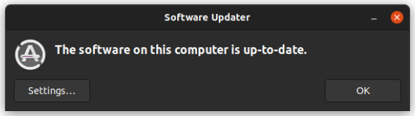

Mantener Ubuntu actualizado
Instalar las actualizaciones con el Actualizador de software o con la terminal, y cómo pasar a una versión nueva.
Mantener Ubuntu actualizado
🔄 Por qué actualizar
Las actualizaciones corrigen fallos y, sobre todo, problemas de seguridad. Un sistema sin actualizar es como una casa con la puerta mal cerrada. En Ubuntu actualizar es gratuito, sencillo y no te obliga a reinstalar nada. Conviene hacerlo siempre tras una instalación nueva y después de forma regular.
Con la interfaz gráfica: Actualizador de software
- Abre el Actualizador de software (Software Updater): pulsa Super y escribe «Software Updater» o «Actualizador».
- Comprobará si hay novedades y te mostrará la lista.
- Pulsa Instalar ahora y escribe tu contraseña si te la pide.
- Si al terminar se pide reiniciar, hazlo cuando te venga bien: algunas actualizaciones no se aplican hasta entonces.

Captura realEl Actualizador de software cuando todo está al día. Fuente: tutorial oficial de Canonical «Install Ubuntu Desktop» (ubuntu.com/tutorials) (6 de octubre de 2026). El aspecto puede cambiar con el tiempo.
Con la terminal
También puedes actualizar escribiendo órdenes. Es muy rápido, y lo verás en muchos tutoriales:
sudo significa «hazlo como administrador». Al escribir tu contraseña no verás nada (ni siquiera asteriscos): es normal, escríbela y pulsa Intro.
Cambiar a una versión nueva de Ubuntu
Para pasar a una versión posterior usa el mismo Actualizador de software: te avisará de que hay una nueva versión y mostrará el botón Actualizar (Upgrade). Hay reglas importantes:
- ➡️ Ubuntu solo admite actualizaciones secuenciales: de una LTS a la siguiente LTS. Si estás en una versión muy antigua, hay que repetir el proceso varias veces.
- 🗓️ Para pasar a una LTS nueva, normalmente hay que esperar a su primera revisión (por ejemplo la 26.04.1).
- 🔌 Con un portátil, conéctalo a la corriente y comprueba que tienes varios GB libres.
- 💾 Haz copia de seguridad de tus archivos antes de empezar.
- ⏱️ Puede tardar hasta una hora, según tu conexión y tu equipo.
Desde la versión 26.04, la antigua aplicación Software y actualizaciones ya no se instala por defecto. Sigue disponible y se instala desde el App Center o con sudo apt install software-properties-gtk.
🧩 Actualizar con la terminal
¿Qué dos órdenes comprueban y aplican las actualizaciones desde la terminal?
🧩 Cambio de versión
Usas una versión LTS muy antigua. ¿Cómo se actualiza a la más reciente?
🧩 Antes de subir de versión
¿Qué conviene hacer antes de cambiar a una versión nueva?